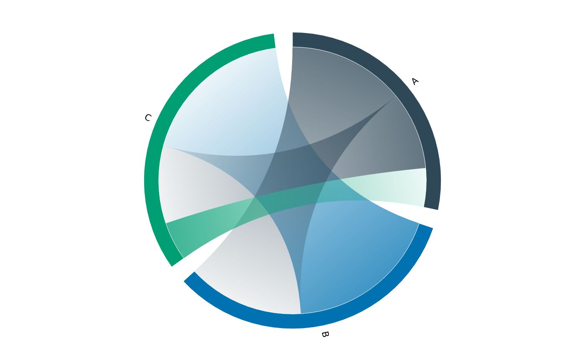

vchord() draws a weighted flow as a circular chord diagram: one arc
(sector) per node, sized by the node's total incident weight, and one ribbon
per flow joining a slice of the source sector to a slice of the target sector
through the centre. Input is a flow list – from, to, value – or a
square flow matrix (row = from, column = to; dimnames are the node names).
Like vgraph() / vsankey() it returns a ready, axis-free, aspect-locked
PlotSpec; mark_chord() is the layer it adds.
Usage
vchord(
data,
from,
to,
value,
gap = 0.02,
sort = c("input", "value"),
link_color = c("source", "target"),
direction = c("gradient", "gap", "both", "none"),
label = TRUE,
width = 6,
height = 6,
dpi = 96
)
mark_chord(
plot,
from,
to,
value,
gap = 0.02,
sort = c("input", "value"),
link_color = c("source", "target"),
direction = c("gradient", "gap", "both", "none"),
label = TRUE
)Arguments
- data
A data frame of flows, or a square numeric matrix (row = from, column = to).
- from, to, value
Columns (tidy-eval) for the data-frame form: the source node, target node, and flow weight. Omit for the matrix form.
- gap
Gap between sectors, as a fraction of the circle each (default
0.02).- sort
Sector and ribbon order:
"input"(default, first-appearance) or"value"(largest weight first).- link_color
Colour ribbons by their
"source"(default) or"target"node.- direction
How to show a ribbon's direction:
"gradient"(default, fade from opaque at the source to faint at the target),"gap"(stop the ribbon short of the target sector, leaving a small gap),"both", or"none".- label
Label each sector with its node name? Default
TRUE.- width, height, dpi
Page size (inches) and resolution.
- plot
A PlotSpec.
Value
A PlotSpec (vchord()) or the modified plot (mark_chord()).
Details
Flows are directed: each node's arc splits into an outgoing block then an
incoming block, so a -> b and b -> a are separate ribbons and a self-flow
a -> a loops from the node's out-block to its own in-block. Sectors are
coloured by node (a qualitative palette); ribbons take their source node's
colour by default (link_color = "target" to colour by target).
Examples
flows <- data.frame(
from = c("A", "A", "B", "C"),
to = c("B", "C", "C", "A"),
value = c(3, 2, 4, 1)
)
vchord(flows, from, to, value)
